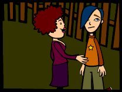
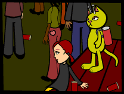
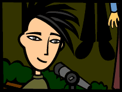
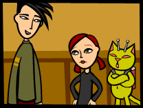

As previously arranged in "the caf", I accompanied June to a
house party in a nearby town called Massapequa. Americans seem very partial
to names created by the indigenous population they conquered. It seems
quite ironic to me. At any rate, we got a ride to the house in Massapequa
with Paula, one of June's friends. Paula's cousin Bobby was hosting the
party.
"Oh my God, this party is going to be so fun! That guy John, remember
the one I met at the hardcore show last May? The one with the blue hair?
Anyway, he's going to be there! I know he's totally interested in me –
he must have just lost my number. I think I actually wrote it on his hand.
He must have washed it off by accident! Haha! That happens sometimes.
Oh my God, he is so cute. I just want to eat him up with a spoon. At that
show? He was touching my hair and yelling about how big it was! It was
so cute! God! I hope he still has his hair blue. That would really suck
if he dyed it green or something."
This girl Paula talks faster and more often than any other human I've
encountered thus far. June just nods her head no matter what inanity come
out of Paula's mouth, although I do not get the impression that she is
agreeing.
"Yeah, that would suck if he dyed his hair green. His personality
might be affected by the seepage of dye into his brain," June replied.
"I know! Uh!"
 We
parked the car a block down from the house. At least I assumed it was
the house in question, since all the lights were on and the bass from
the loud music was making my antennae hum. There were also copious amounts
of beer bottles and red plastic cups littered around the front yard. We
walked around to the back of the house where the amateur band had set
up their instruments and amplifiers. The band was not playing, however,
but the stereo's volume controller was set on 10. A quick glance of the
yard revealed 37 flannel and denim-clad humans aged approximately 15 to
23. Some were smoking, most were drinking, and all were shouting to be
heard over the music. Humans are funny that way. On Katatonia, we dance
when the music is playing and talk when it is not. Life is much easier
that way.
We
parked the car a block down from the house. At least I assumed it was
the house in question, since all the lights were on and the bass from
the loud music was making my antennae hum. There were also copious amounts
of beer bottles and red plastic cups littered around the front yard. We
walked around to the back of the house where the amateur band had set
up their instruments and amplifiers. The band was not playing, however,
but the stereo's volume controller was set on 10. A quick glance of the
yard revealed 37 flannel and denim-clad humans aged approximately 15 to
23. Some were smoking, most were drinking, and all were shouting to be
heard over the music. Humans are funny that way. On Katatonia, we dance
when the music is playing and talk when it is not. Life is much easier
that way.
Paula leapt up on a wooden picnic table bench and scrutinized the crowd;
I can only assume she was looking for the blue haired boy.
"There
he is! At least I think that's him. Hey! John! HEY!!!"
Paula jumped down and ran off into the crowd. I looked at June and she
was rolling her eyes. She is very deft at eye rolling. I'm beginning to
see she's had much practice.
"Let's get some thing to drink," She said.
I nodded.
We slowly made our way through the crowd towards the house. The music
got louder the closer we got. We entered the house through the open sliding
glass doors that led from the deck to the kitchen. There were more people
inside the house. Some were smoking a substance reminiscent of the Katnip
sold in government regulated Nipdens, although this substance smelled
a little sweeter.
June opened the refrigerator and peered in.
"They don't have any soda left, only iced tea and something that
looks like Tang."
Since I wasn't sure what this "Tang" was, I opted for the iced
tea. June poured out two plastic red cups of iced tea and said, "Cheers!"
 One
swallow was all it took for me to identify at least 5 distinct types of
liquor plus a splash of RC brand cola.
One
swallow was all it took for me to identify at least 5 distinct types of
liquor plus a splash of RC brand cola.
June made a face. "Well, it's certainly not Lipton. Must be No Frills
mix or something."
We proceeded to exit the house.
Once outside, we retreated to the picnic table. We sat down between a
girl dressed entirely in blue velvet and a boy with spiky orange hair.
The band was tuning their instruments and everyone continued shouting
over the din.
As June continued to drink her "iced tea", the band started
playing. I stood up on the picnic table to get a better view. The band
was loud and boisterous, but not too good. The lead singer was a tall
male wearing dark red jeans, black leather combat boots and an olive drab
sweater. The other "musicians" were similarly dressed. I must
admit that I was somewhat entertained by their musical stylings.
June
teetered uneasily up next to me and put her arm around my shoulder.
"Ohhh, I don't feel so good," She squinted at the band. "Hey,
that singer is pretty cute, I mean for someone who is in such a sucky
band."
She swayed on her feet a little and then sat back down, hard. That was
when I first heard the sirens. They became louder and louder until the
sky was full of colored lights. Two overweight policemen brandishing huge
industrial sized flashlights came around the corner of the house.
"All right, break it up. Break it up!"
One of the policemen got up on the stage/deck and shooed the lead singer
away from the microphone.
"This party is over boys and girls. It's midnight and the neighbors
are complaining. Go home now, or you're all gonna be sleeping down at
the station tonight."
The crowd groaned and booed. The singer waved his middle finger behind
the policeman and some people shouted and cheered, yet the crowd dispersed
peacefully. The policemen stayed around to make sure everyone was leaving.
June and I walked around the yard looking for Paula.
"Where the hell is she? How are we going to get home now? What the
hell!"
She stumbled up the stairs to the deck and into the house.
"Paula! Where the hell are you?" June shouted.
I followed June in and out of the rooms as we searched for her flighty
friend. I was pretty sure Paula had left, taking with her our chance for
a ride home. We were only 8.3 miles away from the LeBore house, but I
did not think June could manage the walk in her present state of intoxication.
June
stumbled back towards the kitchen door and collided with the lead singer
of the mediocre band.
"Whoa, are you OK?" He looked a little concerned.
June turned red and appeared confused. "Our ride bailed and now we're
stuck here. I'm not supposed to even be here and now I'm gonna have to
call my parents and beg them to pick me up. They're gonna kill me."
June sat down on an orange breakfast barstool and proceeded to cry. I
cannot believe what an emotional catalyst alcohol is! I must do further
research on this phenomenon.
The lead singer scratched his head and raised his eyebrows. "Hey,
don't cry, I can drive you guys home. It's no biggie. Where are you headed?"

June looked up at him and started bawling even louder. I could sense
a large amount of embarrassment emanating from her. I told the singer
June's address and we helped her out to the car. By the time we laid her
out in the back of his boat sized Ô68 Buick Electra, she was snoring audibly.
We drove towards Hicksville in silence. Once we arrived, I shook June
awake and we bid farewell to our driver.
"It's no prob, really. Just lay off the sauce, kiddo." He smiled
a crooked grin and in a cloud of brownish gray exhaust he was gone.
June furrowed her brow and frowned. She turned to me and said, "But
what is his name?"
I shrugged; his name seemed of no real importance to me. June turned pale,
bent over and vomited. We then proceeded to sneak back into the house.
As I suspected, the LeBore's had no clue anything was amiss.